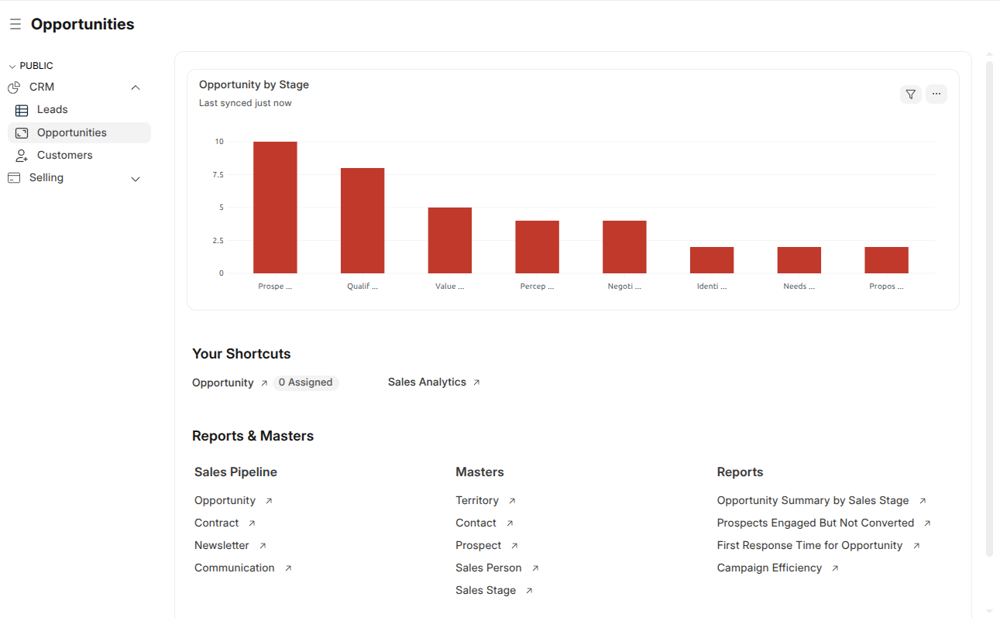
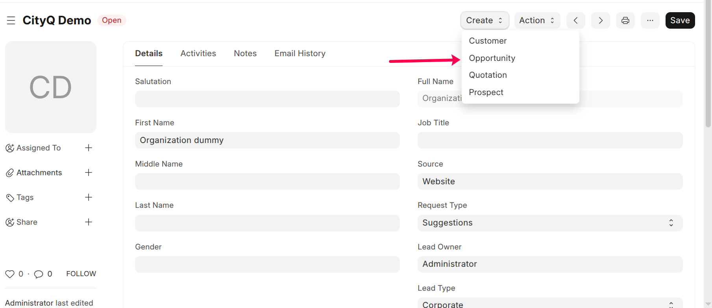

Opportunities
Opportunities Workspace
Path: CRM → Opportunities
The Opportunities workspace provides a real-time overview of the sales
pipeline, opportunity stages, and quick access to opportunity-related actions.

Opportunity by Stage
This chart displays the distribution of opportunities across different
sales stages such as Prospecting, Qualification, Value Proposition,
Negotiation, Proposal, Identification, and Needs Analysis.
- Helps track pipeline health
- Identifies bottlenecks in the sales process
- Supports better sales forecasting
Your Shortcuts
The Your Shortcuts section provides quick access to frequently used
opportunity-related actions.
- Opportunity (Assigned) – View opportunities assigned to the user
- Sales Analytics – Analyze opportunity and revenue performance
Note: Shortcut visibility depends on user roles and permissions.
Reports & Masters
Sales Pipeline
- Opportunity
- Contract
- Newsletter
- Communication
Masters
- Territory
- Contact
- Prospect
- Sales Person
- Sales Stage
Reports
- Opportunity Summary by Sales Stage
- Prospects Engaged But Not Converted
- First Response Time for Opportunity
- Campaign Efficiency
Note: Access to reports and masters is controlled through role-based permissions.
Create an Opportunity
Path: Lead → Create → Opportunity
Path: CRM → Opportunities → Opportunity → Add Opportunity

Steps
- Select Opportunity Type
- Enter Expected Closing Date
- Set Probability (%)
- Add Items, if required
- Click Save
Purpose
To track potential revenue and manage deals through the sales pipeline.
Note: From an Opportunity, users can create a Quotation,
Customer, or mark the opportunity as Lost.
Update Opportunity Status
Steps
- Open the Opportunity record
- Update Sales Stage and Probability
- Add Notes or Comments
- Schedule Calls, Meetings, or Tasks
- Click Save
Purpose
To maintain an accurate and up-to-date sales pipeline and improve deal conversion.